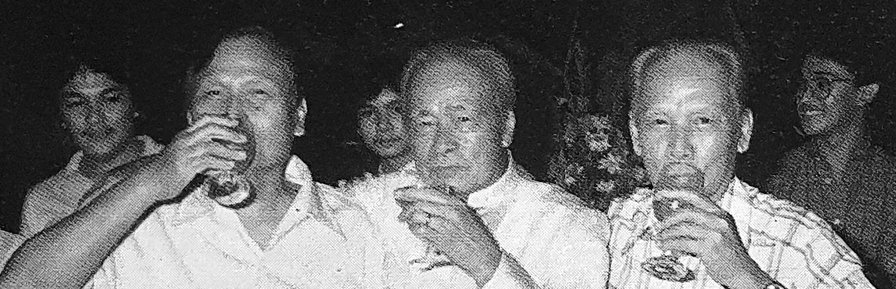

Three brothers, one covenant.
In the ruins of World War II, brothers Pablo, Lorenzo, and Feliciano Sarmiento — who had lost their father early, and much of the family's property in San Jose, Bulacan — vowed to always care for one another and build businesses that would benefit the communities around them.

Seven decades of building
First formal venture: import-export and general merchandising, mainly used clothing.
Originally Philippine American Milling Co. — now a leading feed and poultry producer.
Highway engineering and construction, later logging and sawmilling.
Originally Davao City Development Bank, with DBP as first major partner.
Truck-body manufacturing for Pepsi-Cola, San Miguel, MMTC, and the AFP.
One of the Philippines' most expansive integrated wood processing firms, in Parang, Maguindanao.
Acquired; active in mining, sugar, coconut, and wood manufacturing.
Agricultural development.
The group ranks among the Philippines' largest corporations, with 7,000+ employees.
The third generation carries the covenant forward — from Bulacan to BARMM.
Family & enterprise
The story of the Sarmiento brothers — Feliciano, Lorenzo, and Pablo — is inseparable from their bond as a family. They made major decisions consultatively, and even as their businesses grew and split into separate corporations, they kept a joint hand on the whole. In the early days they worked and lived together, sharing risk and profit equally.
Feliciano and Pablo were imprisoned by occupying forces during the war and took part in the escape from Muntinlupa in February 1945, while Lorenzo kept the family's interests alive — an experience that only deepened their bond. That collaborative spirit and shared vision built a group that ranked among the country's top 50 corporations by 1990.
Our history & experience
SARBRO (1948) was the brothers' first venture — import-export and general merchandising, chiefly used clothing. L.S. Sarmiento & Co. (1958) began as highway engineering and construction before branching into logging and sawmilling; its projects include the Davao City Waterworks System, the Bacolod–Pontevedra Highway, the Simulao River Dam, the Davao City Diversion Road, and the Batoto-Saug River Dam.
Vitarich (1950), originally the Philippine American Milling Company, is a leading Philippine producer of animal feeds, poultry, and processed meats. Sarmiento Industries, on 24 hectares in Barrio Sarmiento, Parang, Maguindanao, became one of the country's most expansive integrated wood-processing operations — two plywood plants, a sawmill, and lumber finishing mills serving markets in the US and China via Hong Kong.
Banco Davao (1965, originally Davao City Development Bank) partnered with the Development Bank of the Philippines. Sarmiento Engineering (1968) became a leading truck-body manufacturer for Pepsi-Cola, San Miguel, Fortune Tobacco, MMTC, and the AFP. Sarmiento Securities (1969) offered consulting services; Manila Machinery & Supply (acquired 1972) worked across mining, sugar, coconut, and alternative energy; Sarphil Corporation (1978) focused on agricultural development; and Mindanao Rattan became the Philippines' largest rattan furniture exporter.
Today the third generation carries the covenant forward through the PS Group of Companies — from Bulacan to BARMM: property development, construction and agriculture, and community building through the Primosa Foundation. The story has found no ending.
 PS Group of Companies
PS Group of CompaniesUniversity Heights, Brgy. Kaypian, City of San Jose del Monte, Bulacan, Philippines